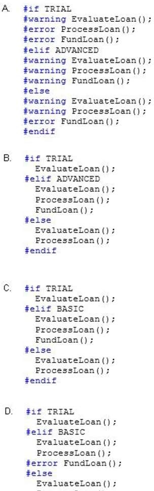

|
You are developing an application that includes methods named EvaluateLoan, ProcessLoan, and FundLoan. The application defines build configurations named TRIAL, BASIC, and ADVANCED. You have the following requirements:
You need to meet the requirements. Which code segment should you use?  A. Option A B. Option B C. Option C D. Option D Correct Answer: B Section: Volume A Explanation Explanation/Reference: ExplicaciónRespuesta:Mostrando de manera visual la respuesta:Fuentes: |